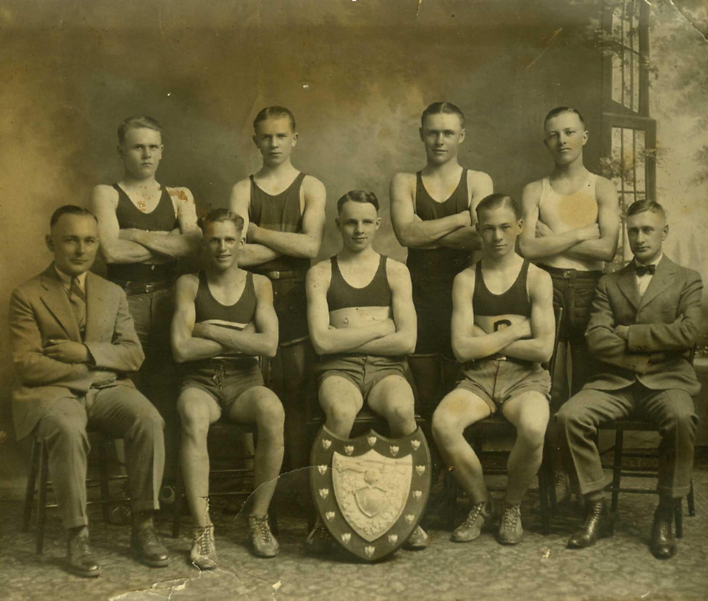

-1-MasterItem.svg)
Stories of Westminster United Church & its People / Page
132
*As mentioned in the first article of this series read Patricia G. Dirks’
Reinventing Christian Masculinity
and fatherhood:The Canadian Protestant Experience- 1900-1920
. In the last of this series we’ll mention
some of the action around that gymnasium of ours which undergirded all this
activities.
Part Three
The year was 1925. Our team was / were the
Intermediate Sunday School Basketball Champions
in competitions held by The Greater Winnipeg
Sunday School Athletic Association. In the back
row G. Coulter, C Waldie, R. Gay and A Stewart.
In the front row coach, W. Cockburn, J. MacDonald,
T. MacDonald, A. Thorpe and mentor R.D. Macfarlane.
R.D. (we also called him Bert) was Marilyn Huband’s
Dad. Besides basketball he and Bill Cockburn were
active also in the general sports program of the
church held in our gymnasium. For a time we paid
Bill $1.50 a night to function as Boys Instructor in the
Gym. In 1922 he and R.D. both did the job for free.
Of course the girls were up and running on their gym nights as well. Mrs.
Yeomans was paid $2.50
and Edith MacDonald was paid $1.50 a night as Girls’ Instructors. In 1921 we also gave Edith, Sophie
Hendry and Hilda Femming each $10.00 cheques for the extra gym service they had
given.
In 1921 Session was forced to decide that no Sunday School children under the
age of 12 could use
the gym. (We were charging them $1.00 a season membership.) The call for gym
time was too great
even though the space was open and used Sunday afternoons and five evenings a
week.There was
also a problem of noise. Our church’s Christian Endeavour Society complained to Session that their
weekly prayer meeting activities were threatened by noise from the gym.For a
time we even
had to hire a gentleman to supervise noise and activity in the Church halls.
Table
of Contents
Yes, WEstminster has a gymnasium
